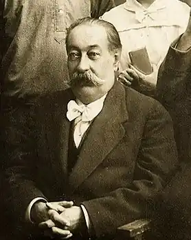

Народився 1863 року у с. Чудніві Житомирської області (тоді Київська губернія). Закінчив Житомирську гімназію. Був сільським учителем на Волині.
Творчу діяльність почав 1880 у російський драматичній трупі П. Надімова у Житомирі.
Від 1881 – у Києві: актор російської трупи Н. Н. Савіна, згодом актор українських мандрівних труп М. Старицького (1883–92), В. Грицая (1892), О. Суслова і О. Суходольського (1895), П. Мирова-Бедюха (1895–98), Г. Деркача (1898–1900), Ф. Левицького (1906). У 1892 організував власну трупу, з якою гастролював в Україні, Росії, Польщі, на Кавказі (прибл. до 1902). 1906–12 (з перервами) очолював власні трупи, які діяли зі змінним складом акторів. Виступали у містах Поволжя, від 1909 – у Туркестані. У репертуарі цих труп: "Наталка Полтавка" І. Котляревського, "Назар Стодоля" Т. Шевченка, "Запорожець за Дунаєм" С. Гулака-Артемовського, "Сорочинський ярмарок" М. Старицького, "Сім'я каторжника" (за П. Джакометті), "Мазепа" О. Віламової (за Ю. Словацьким), п'єси та авторсбки переробки Ванченка-Писанецького – драма з народного життя "Мурло", "Цигани на Подолі", "Мужичка" (за п'єсою О. Островського "Світить, та не гріє"), "Запорозький клад", "Тарас Бульба під Дубном" (за М. Гоголем) (передрукована у кн. "Український театр", 1914), "Цигани на Поділлі" (за повістю Ю. Крашевського "Хата за селом"), "Відьма" (за повістю Е. Ожешко "Дзюрдзя"). У сезоні 1910–11 Ванченко-Пписанецький очолював невелику трупу Театру мініатюр (у репертуарі – одноактні п'єси, оперетки і жартівливі сценки). Практикував недільні шевченківські вистави з дешевими вхідними квитками. Драми "Війна" (1907), "Сатаноідол"/"У трущобах города" (1910), "Рудоплави"/"В диму заводу" (1910) заборонені цензурою через критику соціального устрою російської імперії. Автор "Спогадів українського лицедія" ("Червоний шлях", 1928). Весь його архів зберігаються у ДМТМК УРСР (Київ). Помер 18 липня 1928 року у місті Ташкент, Узбекистан.